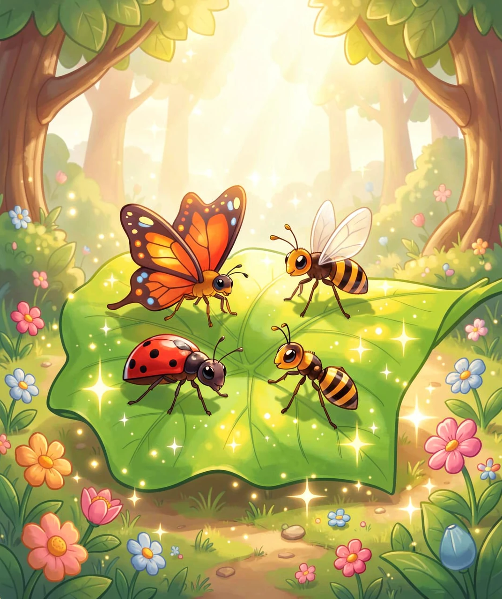
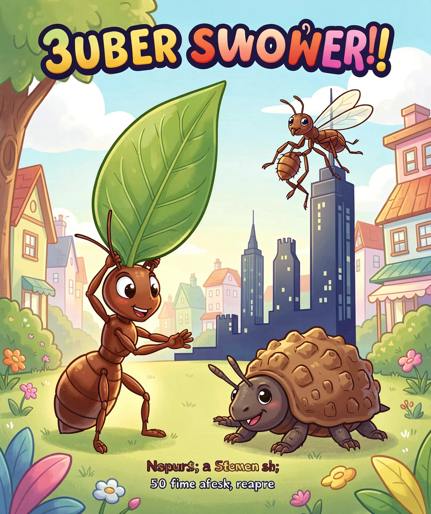
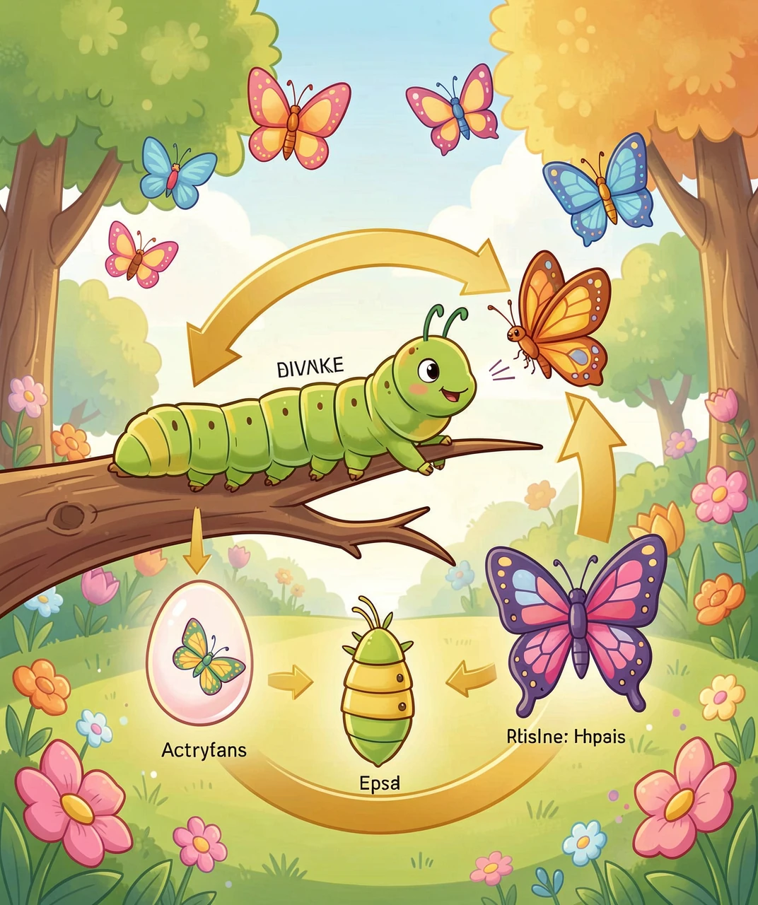
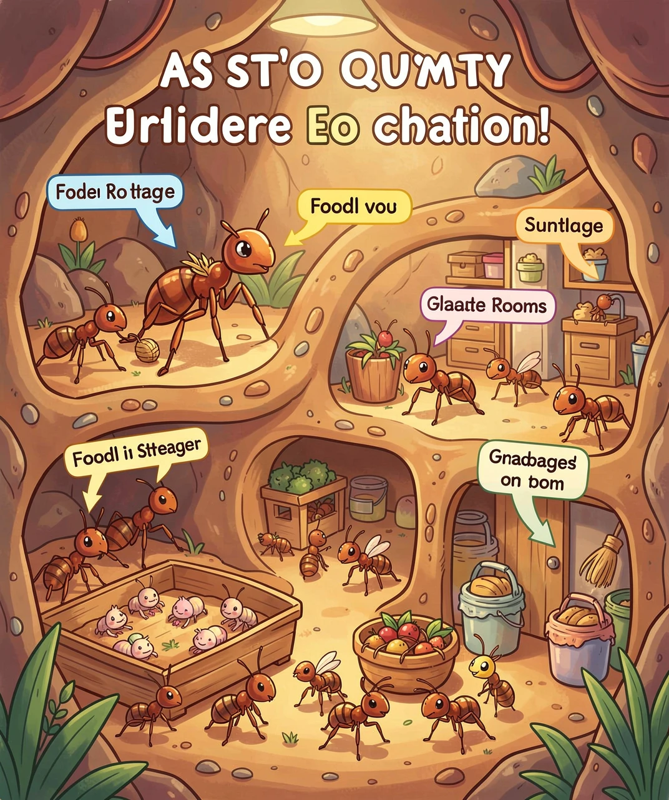
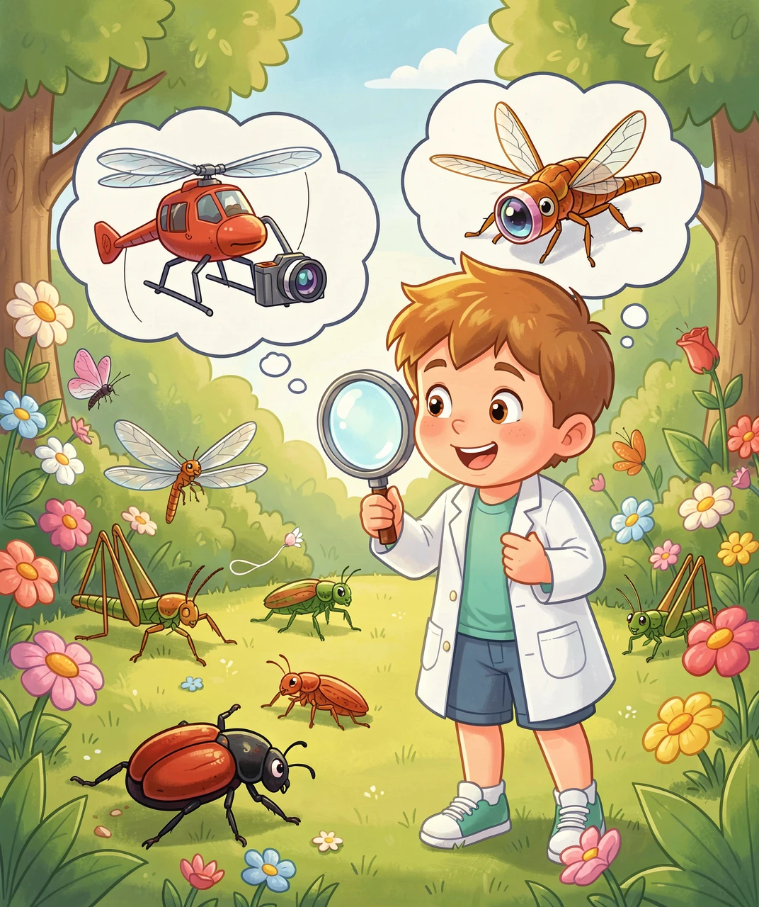

小小身体的超级力量！🐜🦋🐝
你有没有蹲在草地上，仔细看过脚下的世界？那里有一个你从没注意过的微型王国——蚂蚁排着整齐的队伍搬运食物，蝴蝶在花间翩翩起舞，蜜蜂嗡嗡地忙着采蜜……
昆虫，是地球上数量最多、种类最多的动物！科学家已经发现了超过100万种昆虫，而且每年还在发现新的种类！如果把地球上所有的动物放在一起数一数，每5只动物里就有4只是昆虫！
它们住在沙漠里、雪山上、温泉里、深海中……甚至在你家的厨房里！昆虫能活到今天，靠的可不是运气——它们拥有让人惊叹的超级能力！

别看昆虫个头小，它们的力量大到让你不敢相信！

昆虫为什么这么厉害？秘密在于它们的外骨骼！和人类不同，昆虫的"骨头"长在身体外面，像穿了一副铠甲。这副铠甲既保护内脏，又提供了强大的支撑力。而且昆虫的肌肉按体重比例比人类强壮得多——因为它们不需要花能量维持体温！
还有一种叫水熊虫的微小生物（虽然严格来说不是昆虫），它的生存能力更夸张：能承受零下272°C的极寒、151°C的高温、甚至是太空的真空环境！科学家曾把水熊虫放到太空中，10天后收回——它们居然还活着！
你可能听说过"毛毛虫变成蝴蝶"的故事，但这到底是怎样一个神奇的过程呢？
昆虫的变身叫"变态发育"，分为两种：
完全变态——经历四个阶段：

蝴蝶、蜜蜂、甲虫都是完全变态。最神奇的是蛹的阶段——毛毛虫进入蛹以后，身体会完全溶解！没错，变成一锅"细胞汤"！然后特殊的细胞（叫"成虫盘"）会像3D打印机一样，用这些"汤"重新组装出蝴蝶的翅膀、腿、眼睛……整个变身过程就像魔法一样！
不完全变态——只有三个阶段：卵→若虫→成虫。若虫长得像成虫的缩小版，每次蜕皮就长大一点。蝗虫、蜻蜓、蟑螂都是不完全变态。
如果你能缩小到蚂蚁那么小，走进一个蚂蚁窝，你会被眼前的景象惊呆——那简直是一座地下大都市！

最大的蚂蚁窝可以深达8米（相当于两层楼！），住着几百万只蚂蚁。蚂蚁用信息素（一种化学气味）来交流——它们用触角"闻"路，留下气味标记告诉同伴"这里有食物！"或"危险！快跑！"
最厉害的是，蚂蚁社会中每个成员都有自己的职业：蚁后负责产卵，工蚁负责找食物和照顾宝宝，兵蚁负责保卫家园，雄蚁负责交配。它们不需要老板指挥，却能完美配合——这叫自组织，科学家至今还在研究蚂蚁是怎么做到的！
你可能会觉得昆虫又小又不起眼，但人类从它们身上学到了非常多东西！很多改变世界的发明，灵感都来自昆虫：
🚁 直升机 → 蜻蜓：蜻蜓是自然界最厉害的飞行家！它能悬停、倒飞、急转弯——直升机的设计师就是从蜻蜓身上获得了灵感。蜻蜓的翅膀前缘有一块加厚的"翅痣"，能防止翅膀颤动，飞机设计师也借鉴了这个结构！
📷 广角镜头 → 昆虫复眼：昆虫的复眼由几千个小眼组成，能看到几乎360度的画面！科学家根据复眼的结构，发明了超广角相机和全景监控设备。
🧲 爬墙机器人 → 苍蝇脚：苍蝇能在天花板和玻璃上行走，是因为脚底有无数细小的毛，能产生分子级的吸附力。科学家模仿这个原理，发明了能爬墙的机器人！

💊 抗生素 → 昆虫免疫系统：昆虫虽然小，但它们的免疫系统非常强大。科学家正在研究昆虫体内的抗菌肽，有望开发出新型抗生素，对付那些对传统药物产生抗药性的超级细菌。
🏗️ 建筑结构 → 蜂巢：蜜蜂用最少的蜂蜡建造出最坚固的六边形蜂巢，这种结构被建筑师广泛运用——既省材料又超坚固！北京的"水立方"游泳馆就借鉴了蜂巢结构。
下次你看到一只小虫子的时候，别急着走开——仔细看看它，你面前的可能是一位了不起的"工程师"、"飞行员"或"建筑师"！昆虫虽然小，但它们的秘密值得我们用一辈子去探索。谁知道呢，也许下一个改变世界的大发明，灵感就藏在一只小小的虫子身上！
（答案：1-C, 2-C, 3-B, 4-B, 5-B）